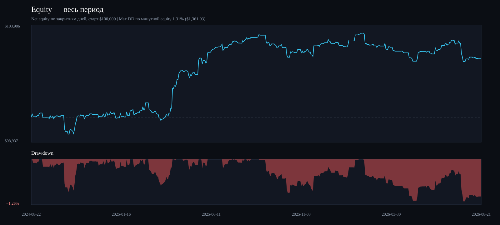
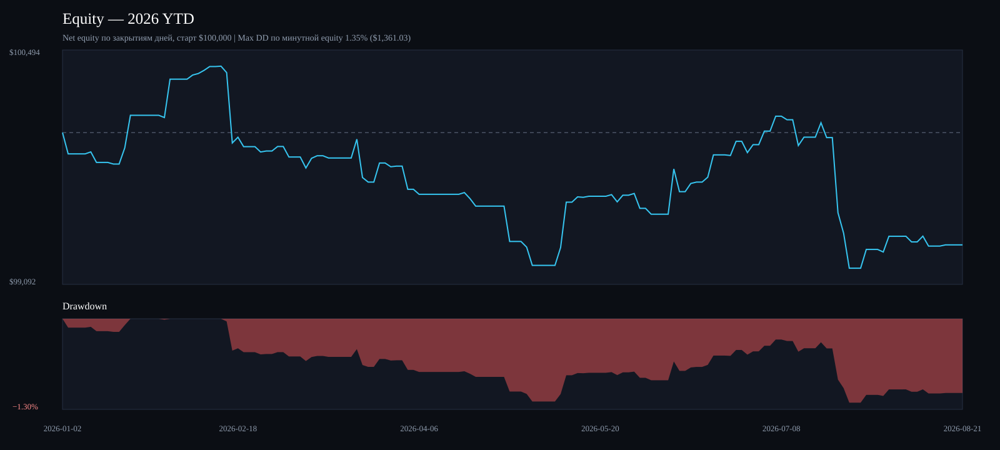
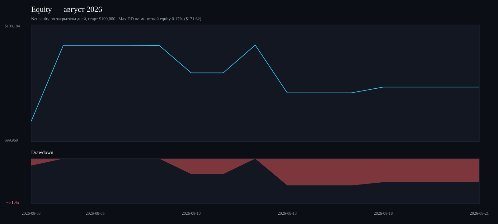

Стратегия без stop-loss/time-stop. Август неполный: данные по 21.08.2026 включительно. Max DD рассчитан по минутной mark-to-market equity.
| Период | Сделки | Gross P&L | Net P&L / return | Sharpe | Sortino | Max DD | Win rate | PF | Комиссия | Slippage | Все издержки |
|---|---|---|---|---|---|---|---|---|---|---|---|
| Весь период | 385 | $5,914.65 | $2,494.06 2.49% | 0.81 | 1.27 | 1.31% $1,361.03 | 57.7% | 1.21 | $352.37 | $3,068.23 | $3,420.59 |
| 2026 YTD | 100 | $195.24 | $-671.64 -0.67% | -0.82 | -1.02 | 1.35% $1,361.03 | 55.0% | 0.81 | $70.90 | $795.99 | $866.88 |
| Август 2026 | 7 | $87.45 | $27.24 0.03% | 0.88 | 1.60 | 0.17% $171.62 | 57.1% | 1.25 | $4.47 | $55.74 | $60.21 |
IBKR-модель: $0.0035 за акцию на каждой стороне ($0.007 round trip); slippage 2 bps на входе и 2 bps на выходе (примерно 4 bps round trip); позиция $20,000, целое число акций. Net P&L уже после обеих издержек.


